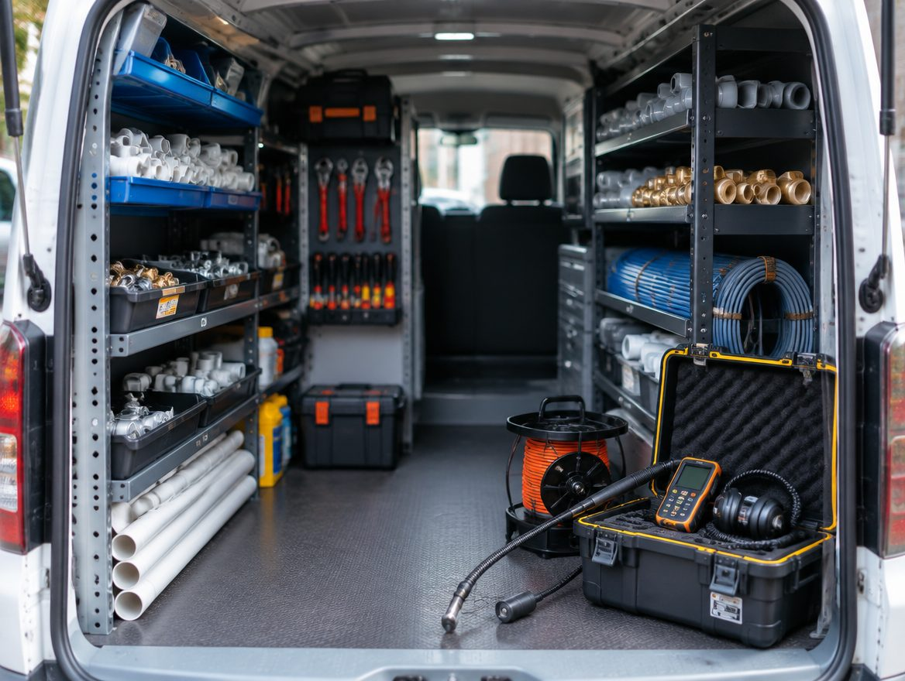

01 / 공간의 구조
기존 설비와 실제 사용 조건을 함께 살펴봅니다.
설비 공사는 공간의 쓰임을 이해하는 일에서 시작됩니다. 도면, 현장 조건, 작업 범위를 같은 기준으로 정리합니다.
공사 범위 살펴보기↗| 검토 분야 | 확인할 현장 조건 | 협의할 결과 |
|---|---|---|
| 급수 · 배수 설비 | 기존 배관, 공간 용도, 연결 위치 | 작업 구간과 변경 범위 |
| 공간 리모델링 | 도면, 마감 상태, 타 공정 일정 | 공정 간 연결과 인계 조건 |
| 부분 보수 | 문제 구간, 주변 시설, 사용 제약 | 보수 · 마감의 포함 여부 |
분야와 조건은 공사 상담 구조를 보여주는 예시이며 실제 업체의 시공 가능 범위는 확인이 필요합니다.

기존 설비와 실제 사용 조건을 함께 살펴봅니다.
설비와 마감, 다른 공정 사이의 인계 지점을 정리합니다.
주소 대신 공간 유형과 도면 여부부터.
바꾸는 곳과 유지하는 곳을 구분합니다.
다른 공정과 사용 가능 시간을 확인합니다.
확인할 결과와 인계 범위를 협의합니다.